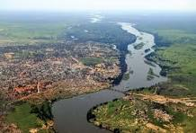

Photo Gallery
Explore the beautiful places, landmarks, and culture of Sudan through images
Sudan in Pictures
Sudan is a beautiful country with many amazing places to see. From the ancient Nubian pyramids in the desert to the green banks of the Nile River, Sudan has many interesting and beautiful locations. Below you can see some examples of what Sudan looks like.
Famous Landmarks
.jpg)
Meroe Pyramids
Ancient Nubian pyramids in the Sahara Desert

Nile River
The great Nile River flowing through Sudan
.jpg)
Khartoum City
The capital city of Sudan at night
.jpg)
Sahara Desert
The vast desert in northern Sudan
.jpg)
Khartoum Mosque
Beautiful mosques in Sudan's capital
.jpg)
Dinder National Park
Green wildlife park in eastern Sudan
Natural Beauty
Nile Sunset
Beautiful sunset over the Nile River
.jpg)
Nile Wildlife
Animals that live along the Nile River
.jpg)
Felucca Boats
Traditional wooden boats on the Nile
Traditional Culture
.jpg)
Traditional Clothing
Colorful traditional Sudanese tobe
.jpg)
Sudanese Music
Traditional music performance
.jpg)
Sudanese Food
Traditional Sudanese dishes and meals
Note: The gallery above uses placeholder icons. In a complete website, these would be replaced with real photographs of Sudan.
About the Meroe Pyramids
The Meroe Pyramids are one of the most famous attractions in Sudan. They are located about 200 km northeast of Khartoum. These pyramids were built between 300 BC and 400 AD. There are more than 200 pyramids in the Meroe area. They look different from Egyptian pyramids because they are smaller and have steeper sides. The Meroe Pyramids are a UNESCO World Heritage Site.
| Location | Type | Age | Status |
|---|---|---|---|
| Meroe | Nubian Pyramids | Over 2,000 years old | UNESCO World Heritage |
| Naga | Ancient Temples | Around 2,000 years old | Archaeological Site |
| Khartoum | Modern City | Founded 1821 | Capital City |
| Dinder Park | National Park | Established 1935 | UNESCO Biosphere |